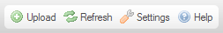

Panel nástrojů je vyhrazená část na v horní části rozhraní CKFinder. Obsahuje řadu tlačítek menu, na které můžete kliknout pro získání přístupu k různým funkcím průzkumníka souborů.
Takto vypadá standardní Panel nástrojů CKFinder:

Abyste provedli operaci, která je tlačítku přidělená, klikněte jednou na tlačítko. Ve většině případů buď okamžitě provede některou přednastavenou činnost, nebo otevře rozbalovací panel s dalšími možnostmi nastavení funkce.
Nezapomeňte, že Panel nástrojů můžete také používat pomocí klávesnice. Abyste vstoupili do Panelu nástrojů, použijte klávesovou zkratku Alt+F10. Pro přesun na další nebo předchozí tlačítko, použijte klávesy Šipka doprava a Šipka doleva v tomto pořadí. Pro aktivování zvoleného tlačítka Panelu nástrojů, stiskněte Enter nebo Mezerník.
Následující je seznam dostupných tlačítek ve standardním Panelu nástrojů: